Comunicacions¶
Les comunicacions informàtiques permeten el moviment de dades entre diferents dispositius i components informàtics. Són elements fonamentals que es troben a tots els nivells de la informàtica, des de les línies de comunicació internes d’un microprocessador fins a les línies de comunicació mundials.
Índex de contingut:
Classificació¶
- Connexions internes
- Autobusos de placa base
- Sata
- PCI Express
- Zocalo per a la memòria RAM
- Zocalo per a la CPU
- Connexions externes
- USB
- Connectors d'àudio analògics
- Estata
- Ps/2
- RS232
- Connexions de vídeo
- VGA
- DVI
- Hdmi
- Connexions de xarxa local
- Ethernet
- Connexions sense fils
- Bluetooth
- Wifi
Connectors masculins i femenins¶
Els connectors serveixen per unir els cables elèctricament a ordinadors i altres perifèrics.
Normalment els cables ** ** solen tenir els pins de connexió sortint (tipus ** connectors masculins **) i els ordinadors i la resta d’equips electrònics tenen els forats (femella ** Tipus ** Tipus connectors **) on es connecten els pins de connexió masculina.
El motiu d’aquesta elecció és que els pins masculins dels cables es poden trencar o plegar amb més facilitat que els forats femenins de l’equip. Si es trenquen els pins d’un cable, es pot substituir per un cost reduït, mentre que l’ordinador d’un ordinador o d’un perifèric es trenca, seria molt més car substituir -lo.
Altres connectors masculins i femenins, com els connectors USB, no tenen pins de connexió, sinó que contacten superfícies i són molt més robustes que els connectors de pins. Però normalment es manté l’elecció del tap masculí per al cable i la femella per a l’equip.
Gènere dels connectors a Wikipedia en anglès.
Connexions internes¶
- Autobusos de placa base
Són les pistes del circuit imprès que transporten les dades entre la CPU i la resta de dispositius connectats a la placa base.
Té moltes més línies de dades que qualsevol altre cable de comunicació i és el mitjà de transmissió més ràpid. Les distàncies que recorren les línies de dades són molt curtes, d’uns pocs centímetres.
- Sata
El Serial Ata Connecta unitats d'emmagatzematge de l'ordinador (HDD, SSD, discos òptics) amb el processador. L’autobús SATA ha estat al mercat des del 2003 i actualment es troba en la versió 3.0 de l’operació.
El cable de connexió de la placa base a la unitat d’emmagatzematge pot tenir una longitud de fins a 1 metre, tot i que la majoria dels cables fabricats tenen una longitud inferior. Això es deu al fet que SATA és un estàndard dissenyat per connectar dispositius dins de la caixa de l’ordinador o la carcassa.
Versió Any Velocitat SATA 1.0 2003 150 megabyte/s SATA 2.0 2004 300 megabyte/s SATA 3.0 2008 600 megabyte/s 
Dades SATA i connectors d’aliments de dos discs durs.¶
Dsimic <https://commons.wikimedia.org/wiki/file:2.5-nch_sata_drive_on_top_of_a_3.5-nch_sata_drive._close-up_of_data_and_power_connectors.jpg> `` `` `` `` `` `` `` `` `` `` `` `` `` `` ` `` `` `` `` `` `` `` `` `` `` `` <https://creativecommons.org/licenses/by-sa/3.0/>`__, a través de commons de Wikimedia.- PCI Express
PCI Express PCIe o PCI-E és un conjunt de connectors interns de la placa base, que serveix per connectar les targetes d'expansió a l'ordinador. Aquestes targetes d’expansió poden ser ** targetes gràfiques **, controladors RAID, targetes de xarxa Ethernet, targetes de so, etc.
Hi ha 4 mides del connector segons el nombre de canals de comunicació que continguin.
Versió Pins Tamany PCI-E X1 18 25 mm PCI-E X4 32 39 mm PCI-E X8 49 56 mm PCI-E X16 82 89 mm 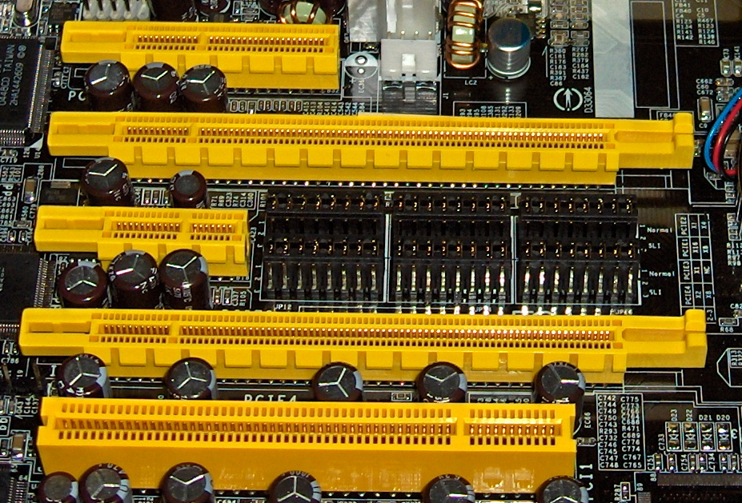
PCI Express X4, X16, X1, X16.¶
El connector inferior és PCI X32 (sense express, ja obsolet).
Jona, cc per-sa 3.0, a través de Wikimedia Commons.
La velocitat de transferència depèn de la versió PCI Express (augmenta cada pocs anys) i del nombre de canals de comunicació del connector.
Versió Any Velocitat x1 Velocitat x16 PCI-E 1.0 2003 0,25 GB/s 4,0 GB/s PCI-E 2.0 2007 0,50 GB/s 8,0 GB/s PCI-E 3.0 2010 1,0 GB/s 16 GB/s PCI-E 4.0 2017 2,0 GB/s 32 GB/s PCI-E 5.0 2019 3.9 GB/s 63 GB/s PCI-E 6.0 2021 7,9 GB/s 126 GB/s L’aplicació més coneguda dels connectors PCI-E X16 és la connexió de les targetes gràfiques a la placa base.
Hi ha un "connector anomenat m.2 <https://es.wikipedia.org/wiki/m.2>`__ que es basa en el connector PCI Express 3.0 X4. S'utilitza per connectar unitats SSD molt ràpides i compactes a velocitats molt superiors a les permeses pel tradicional connector SATA III.
Els ordinadors personals més antics no van incorporar moltes de les funcions actuals a la placa base (entrada i sortida, comunicacions per Ethernet, autobusos USB, etc.) i aquestes funcions havien de ser subministrades per targetes d’expansió especialitzades, connectades a connectors d’expansió similars a la PCI actual.
- Tipus DIMM RAM ZÓCALO
DIMM són les acrònims del mòdul de memòria en línia doble (mòdul de memòria de dues línies) anomenada perquè els connectors del mòdul tenen dues cares de pins de connexió.
Aquests endolls serveixen per connectar els mòduls de memòria RAM a la placa base.
Segons el tipus d’ordinador (caixa o tipus portàtil) i, depenent de la versió RAM, aquests mòduls poden tenir un nombre diferent de contactes, mida diferent i posició diferent de la ranura central per evitar la connexió per error de mòduls no compatibles.
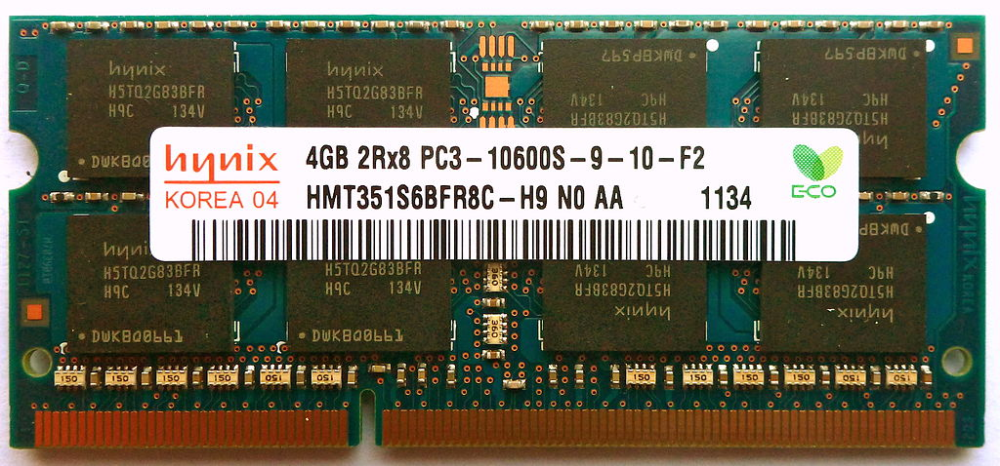
So-Dimm DDR3 Mòdul de memòria per a ordinadors portàtils.¶
Tobias B. Köhler, cc by-sa 3.0 <https://creativecommons.org/licenses/by-sa/3.0/> `` `` `` `` `` `` `` `` `` `` `` `` `` `` `` ` `` `` `` `` `` `` `` `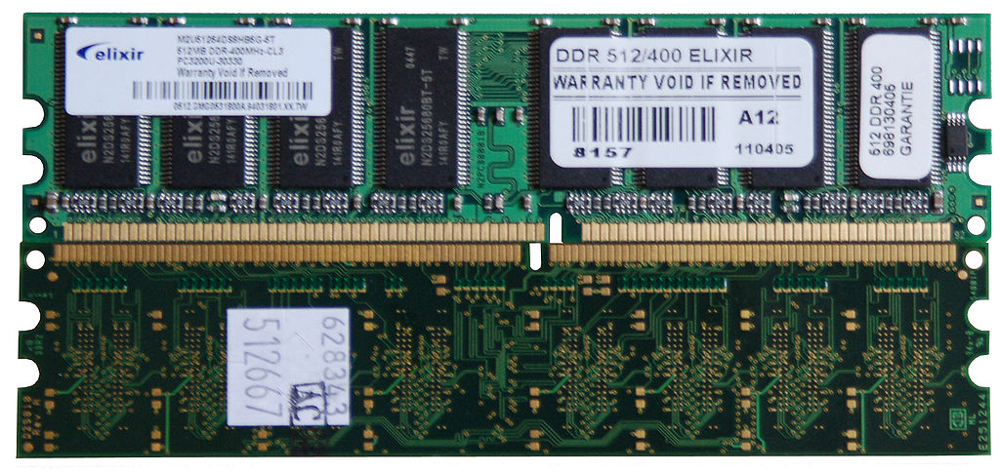
Mòdul de memòria DDR DDR i mòdul DDR2 amb un nombre diferent de pins i diferents ranures de seguretat.¶
Wagner51 <https://commons.wikimedia.org/wiki/file:notch_posion_between_ddr_and_ddr2.jpg> __, cc by-sa 3.0 <https://creatcommons.org/licenses/by-sa/3.0/> `` `` `` `` `` `` `` `` `` `` `` `` `` `` Wikimedia Commons.- Zocalo per a la CPU
El cpu zócalo permet connectar el microprocessador o la CPU a la placa base. En les plaques base de gran rendiment, pot haver -hi més d’un plint per connectar diversos microprocessadors a la mateixa placa base.
Cada presa de CPU serveix per connectar microprocessadors de la mateixa família. Els socs canvien de forma i nombre de connexions entre famílies de microprocessadors i entre fabricants de CPU (Intel o AMD).
La presa de CPU permet augmentar la potència de l’ordinador canviant l’antic microprocessador per a un altre més potent d’una família compatible amb la del microprocessador anterior. Aquesta operació sol ser senzilla de realitzar i només costa una petita fracció del que costaria comprar un ordinador nou.
Aquests són alguns endolls per a ordinadors d'escriptori:
Nom Any Família LGA 1155 (H2) 2011 Intel Sandy Bridge i Ivy Bridge LGA 1150 (H3) 2013 Intel Haswell i Broadwell LGA 1151 (H4) <https://es.wikipedia.org/wiki/lga_1151> `` `` 2015 Intel Skylake i Kabylake LGA 1200 2020 Llac Intel Comet Socket am4 2016 Amd Zen+, Zen 2 i Zen 3 Socket am5 2022 Amd Zen 4 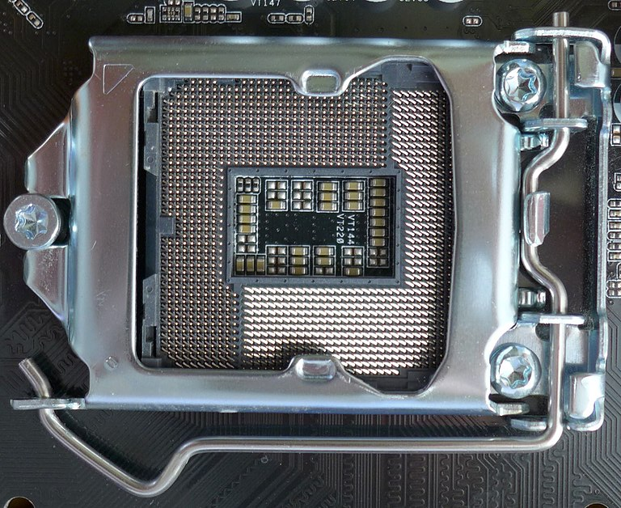
LGA 1151 Tipus CPU Zócalo, també conegut com a "Socket H4 <https://es.wikipedia.org/wiki/lga_1151>`__.¶
Xaar <https://commons.wikimedia.org/wiki/file:socket_1151_closed_01.jpg> __, cc by-sa 4.0, via wikimedia commons.
{kind=link}
{kind=link}
{kind=link}
{kind=link}
{kind=link}
{kind=link}
Connexions externes¶
- USB
El USB (bus en sèrie universal) és un estàndard per donar connexió de dades i aliments a ordinadors, perifèrics i dispositius electrònics. Va començar a utilitzar -se massivament des del 1998.
Actualment, hi ha 4 grans estàndards USB amb les característiques que apareixen a la taula següent.
Estàndard Any Velocitat Corrent Altres USB 1.1 1998 1 mbyte/s 0,5 a Només els connectors A i B. USB 2.0 2000 50 mbyte/s 0,5 a També connectors
Mini i micro.
USB 3.0 2008 600 Mbyte/s. 0,9 A - 3,0 a Color blau USB 4.0 2019 4000 Mbyte/s 3.0 a Només el connector C 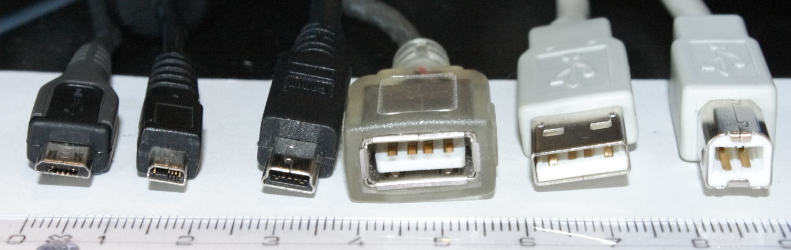
Connectors USB. Micro tipus B, UC-E6, Mini tipus B, tipus A femení, tipus A masculí, tipus B.¶
Viljo Viitanen, a través de Wikimedia Commons.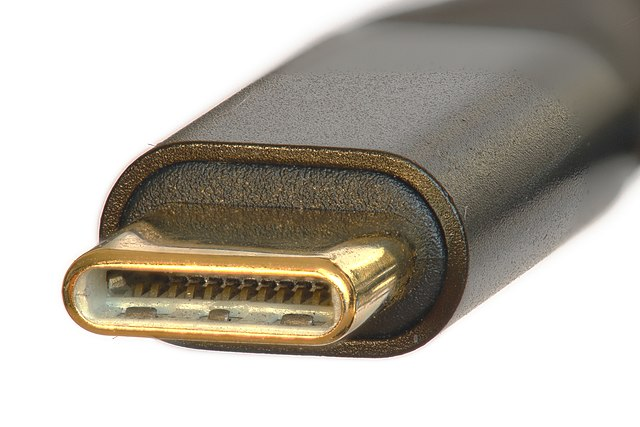
USB Connector C reversible.¶
El connector USB C és el més modern i l'únic compatible amb la USB 4. Especificació a més de permetre les comunicacions d'alta velocitat, amb la tecnologia de lliurament de potència pot alimentar dispositius amb una potència de fins a 100 watts, molt més gran que la potència permesa pels anteriors connectors.
- Connectors d'àudio analògics
Els connectors d'àudio analògics s'utilitzen per connectar micròfons, auriculars i altres sistemes d'àudio analògics a dispositius electrònics.
Hi ha connectors de diferents mesures, però el més popular és el connector de 3,5 mm que s’utilitza en la majoria d’ordinadors i telèfons intel·ligents.
Codis de colors per a connectors d’àudio de 3,5 mm en ordinadors personals.
Color Funcionar Verd Sortida d'àudio. Canals frontals. Blava Entrada d'àudio. Nivell de línia. Rosa/vermell Entrada d'àudio. Nivell de micròfon. Negre Sortida d'àudio. Canals posteriors. Grisa Sortida d'àudio. Canals laterals. Ataronjat Sortida d'àudio. Canal central i subwoofer. 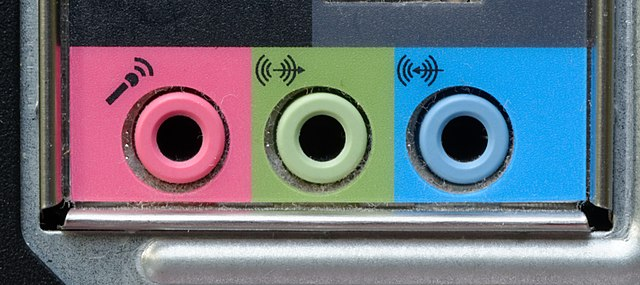
Connectors d'àudio analògics de 3,5 mm d'un ordinador personal.¶
`Jud McCranie <https://commons.wikimedia.org/wiki/file:computer nom Wikimedia Commons.- Ps/2
El `ps/2 <https://es.wikipedia.org/wiki/ps/2> __ pren el seu nom de IBM Computers System/2, creat per IBM el 1987. Aquest connector s'utilitza per connectar teclats i ratolins.
Actualment, aquests connectors són ** obsolets **, però encara s’incorporen a algunes plaques base per motius de compatibilitat amb els teclats i els ratolins més antics. Algunes plaques base modernes tenen només un connector, morat i mig verd, que serveix per connectar tant els teclats com els ratolins antics.
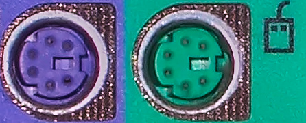
Ports PS/2 per al teclat (morat) i per al ratolí (verd).¶
Norman Rogers, a través de Wikimedia Commons.- RS-232
El RS-232 és una interfície per a l'intercanvi de dades mitjançant sèries de baixa velocitat.
Aquesta norma es va utilitzar àmpliament fa anys, fins que va ser substituïda per la USB a partir del 1998. Actualment està obsoleta i no sol incorporar-se a les plaques base, però es pot afegir amb una targeta d’expansió PCI o mitjançant un convertidor USB a RS-232.
Encara hi ha equips antics de fàbriques, laboratoris i empreses que utilitzen la norma RS-232 i és necessari comunicar-se amb elles.
Aquest connector no s’ha de confondre amb el connector de vídeo VGA, molt similar, però amb tres files de pins de connexió.
{kind=link}
{kind=link}
{kind=link}
{kind=link}
{kind=link}
Connectors de vídeo¶
- VGA
El `` VGA Connector <https://es.wikipedia.org/wiki/video_graphics_array#conetor_vga>`__ (Video Graphics Array) és un estàndard per comunicar la targeta gràfica de l'ordinador amb el monitor de vídeo o amb el projector. Aquesta connexió utilitza senyals analògics, amb una capacitat de màxima qualitat i menys capacitat de resolució que els connectors digitals actuals (DVI i HDMI).
Tot i ser un estàndard dissenyat per a pantalles antigues de CRT i ofereix pitjors avantatges en les pantalles digitals LCD, encara s’utilitza en ordinadors i monitors actuals per emmagatzemar la compatibilitat amb dispositius antics.
- DVI
El dvi (interfície visual digital) és un estàndard per comunicar un vídeo que utilitza senyals analògics i digitals.
El connector DVI permet que el cable es cargola a la caixa de l’ordinador, de manera que sigui més robust que el connector HDMI.
- Hdmi
El `connector HDMI <https://es.wikipedia.org/wiki/hight
Aquest és un dels estàndards més utilitzats en tot tipus de nous equips multimèdia, no només en equips informàtics.
El connector és més fràgil que altres connectors de vídeo i és més fàcil desconnectar de manera inadvertida.
{kind=link}
{kind=link}
{kind=link}
Comparació entre connexions de vídeo
Estàndard Signar Connector Content VGA Analògic Robust Vídeo DVI Analògic
i digital
Robust Vídeo Hdmi Digital Feble Àudio i
Vídeo
Connectors de xarxa¶
- Ethernet
L’estàndard de xarxa local Ethernet s’utilitza per connectar ordinadors en àrees locals, que normalment s’uneixen a ordinadors d’un mateix edifici o fins i tot de diversos edificis propers.
Els cables de coure solen suportar una distància màxima de 100 metres, però aquesta distància es pot estendre mitjançant un interruptor intermedi que fa que els repetidors o que utilitzin cables de fibra òptica.
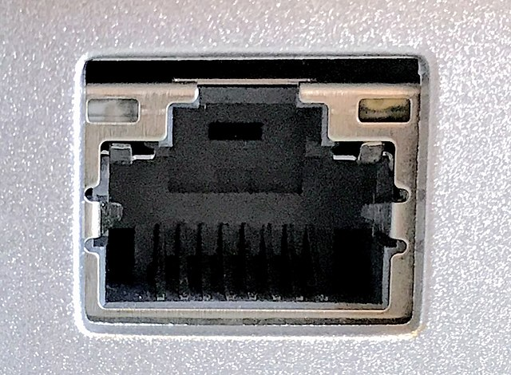
Connector Ethernet RJ-45 Femení.¶
Amin, `cc by-sa 4.0 <https://creativecommons.org/licenses/by-s/4.0/> __, a través de Wikimedia Commons.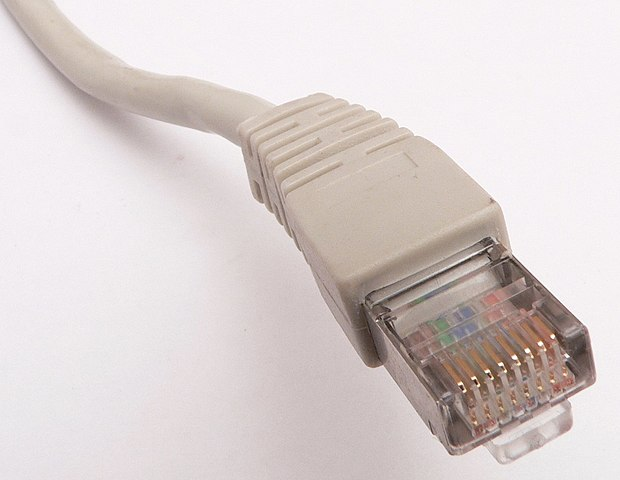
Cable UTP Ethernet amb connector masculí RJ-45.¶
David Monniaux <https://commons.wikimedia.org/wiki/file:ethernet_rj45_connector_p1160054.jpg> __, cc by-sa 3.0 <https://creativecommons.org/licenses/by-sa/3.0/> ` `` `` `` `Wikimedia Commons.El cable que s’utilitza per a les connexions sol ser un cable de coure UTP (parella retorçada no protegida o un parell de trenat no shielt). Aquest és un tipus de cable amb pitjors avantatges que els cables de fibra òptica, però és més barat instal·lar -se i senzill de manejar, de manera que s’utilitzen principalment en connexions properes, desenes de metres.
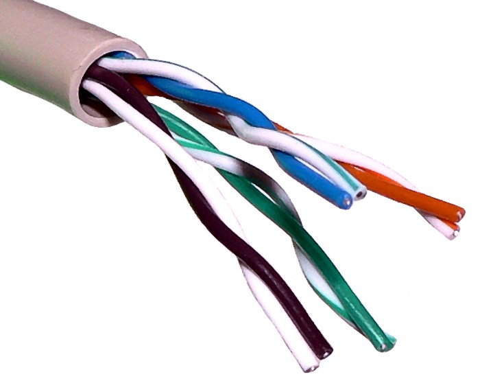
Cable UTP Ethernet, amb quatre parells de cable de coure trenat i no progut.¶
Baran Ivo, a través de Wikimedia Commons.Normes de comunicacions Ethernet més utilitzades amb cable de coure.
Estàndard Any Cables Velocitat 10Base T 1990 Categoria UTP 3 10 Mbit/s 100Base T2 1998 Categoria UTP 5 100 Mbit/s 1000base t 1999 Categoria UTP 5 1000 Mbit/s 10gbase t <https://es.wikipedia.org/wiki/10_gigabit_ethernet> `` `` 2006 Categoria UTP 6A 10.000 Mbit/s - Comunicació de fibra òptica
Els estàndards de la comunicació de fibra òptica <https://es.wikipedia.org/wiki/comunicaci%C3%B3n_por_fibra_%C3%B3ptica#aplicaciones> `__ cobertura de enllaços domèstics per a àudio digital, mitjançant enllaços altes i grans distàncies per a Ethernet, encara intercontinental.
La tecnologia més coneguda per la majoria de la gent és la ftth o la fibra a casa, que instal·len empreses telefòniques per donar accés a Internet a les llars.
Els avantatges de la fibra òptica contra els cables de coure són que pot transportar informació a una velocitat molt més alta. A més, els cables de fibra òptica poden arribar a distàncies molt més grans sense pèrdues de senyal.
Els desavantatges de la fibra òptica consisteixen en el seu major cost i la seva major dificultat d’instal·lació.
{kind=link}
{kind=link}
{kind=link}
Connexions sense fils¶
- Wifi
L’estàndard wifi és una tecnologia que permet connectar equips entre ells o a Internet sense fils. És la versió sense fils de l'estàndard Ethernet de les xarxes locals.
El gran avantatge que té és que no necessita cables per fer les connexions.
El principal desavantatge de les xarxes WI -FI es basa en compartir el mitjà de transmissió, aire, amb la resta d’equips. Això ho fa congestionat quan hi ha molts equips que treballen a prop i poden tenir buits de seguretat (robatori o espionatge de senyals WiFi).
Hi ha molts estàndards diferents dins del WI -FI. Els més moderns, com el 802.11ax o Wi-Fi 6 <https://es.wikipedia.org/wiki/ieee_802.11ax> `` de 2020, poden transmetre a velocitats superiors a 60 mbyte/s fins a distàncies de 100 o més metres, depenent de les obstacles que es troba el senyal. Com més gran sigui la distància o els obstacles, més baixa és la velocitat de transmissió.
- Bluetooth
El estàndard Bluetooth Les comunicacions sense fils serveixen per facilitar les comunicacions entre dispositius mòbils, sense utilitzar cables. El Bluetooth és capaç de connectar el telèfon intel·ligent a auriculars sense fils o al sistema sense mans d’un cotxe.
Aquesta norma també serveix per fer transferències de fitxers entre dispositius, per exemple, per imprimir un document en una impressora des d’un ordinador portàtil sense utilitzar cables.
Aquesta norma té un rang més limitat que la connexió Wi -FI (uns 10 metres) i és menys versàtil. Com a avantatge, té un consum molt inferior a la connexió Wi -FI.
{kind=link}
{kind=link}
Test de prova¶
`Test de comunicacions III. <../test/es-Hardware-Communications-3.html> `__